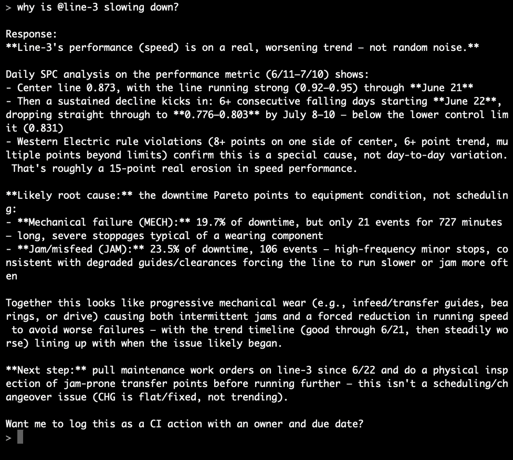

Chemical engineer and operations leader driving measurable results in food manufacturing through Six Sigma methodology, agile project management, and data-driven decision making.
I'm a chemical engineer with deep experience in food manufacturing operations. I specialize in leading cross-functional teams through complex improvement initiatives — turning controllable losses into measurable savings.
Currently serving as CI/OE Team Leader at Kraft Heinz, I manage yield improvement programs across multi-system production environments. My approach combines Six Sigma rigor with agile execution to deliver results at pace.
I'm completing my Master's in Engineering Management at Penn State while actively driving operational excellence on the plant floor — bridging the gap between strategic thinking and hands-on execution.
Leading agile CI initiatives from opportunity identification through execution. Specializing in yield improvement and controllable loss reduction in high-volume manufacturing.
Deep technical knowledge of food manufacturing systems, physical infrastructure, and production optimization across multi-line environments.
Cross-functional team leadership, stakeholder management, and executive-level communication. Translating shop floor data into corporate-ready narratives.
Process engineering foundation applied to manufacturing optimization, regulatory compliance, and safety standards across industrial operations.
Leading yield improvement initiatives across 5 production systems with 29 fillers. Managing agile sprints targeting $500K+ in annual savings from controllable losses. Driving data accuracy improvements and stakeholder alignment from plant floor to corporate leadership.
Managed regulatory compliance and safety standards at the industry level. Led stakeholder communications and technical documentation for chemical safety programs.
Supervised end-to-end $3M plant relocation project. Managed cross-border logistics, equipment installation, and production line commissioning on time and within budget.
An MCP server that gives an AI assistant the toolkit of a CI engineer: OEE decomposition, downtime Pareto analysis, SPC control charts, and yield-loss economics over live plant data. Ask “why is this line slowing down?” and it answers with control-chart evidence — then logs countermeasures to an action register with owners and due dates.
The CI rituals ship as reusable commands — a /dmaic investigation, a /daily_huddle brief, a one-page /a3_report — and every number traces back to a documented formula. A recommendation you can't audit is a recommendation you can't trust.

I'm always open to conversations about operational excellence, manufacturing leadership, and engineering management. Whether you're looking to collaborate or just want to exchange ideas — reach out.